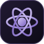

An infinite board
Pan, zoom and arrange live terminals next to notes, checklists, kanban, a calendar, web previews and git.
Explore the board
ArgonCommand deck for coding agents
Run Claude Code, Codex, Gemini and more side by side, on a board you can zoom, arrange and talk to. No more hunting through terminal tabs.
Argon 1.0.5 · Windows 10 and 11, 64-bit · Free · Install notes
Watch it work
Thirty seconds of the real board: one agent builds, the next tests, the last reviews, each picking up when the one before it is done.
One place for the whole team
Each tile on the board is a real terminal running a real agent. Argon watches them all and tells you, at a glance, who is working, who is resting and who is waiting on you.
Pan, zoom and arrange live terminals next to notes, checklists, kanban, a calendar, web previews and git.
Explore the boardEvery agent shows as working, resting or needs you. Get a notification when one is waiting for approval.
Explore statusLaunch up to 12 agents at once, loop a prompt until a goal is met, and hand work from one agent to the next.
Explore orchestrationSee it work
These are small, scripted models of how Argon behaves, so you can get a feel for it before you install. The real thing runs real agents in real terminals.
Built for running many at once
Agents are great until you have five of them in five windows. Argon keeps the whole crew in one place and handles the bookkeeping.
Each tile is a full Windows terminal. Ctrl+C works, full-screen tools work, and agents behave exactly as they do on their own.
Approval prompts turn the tile amber, move it to the top of the mission map and, if you are elsewhere, send a Windows notification.
Close Argon with agents running and they relaunch in place next time, continuing their last session where the agent supports it.
The Usage window shows the 5-hour and weekly limits of your Claude, Codex and Copilot plans, and charts the tokens your agents used. Your sign-ins never leave your PC.
Keep notes for every agent, globally or per repo, and push them into any console when you want them to know.
Up and running fast
Get Argon for Windows. It keeps itself up to date, and the setup panel shows which agents you already have.
Each project becomes its own workspace tab, with its own board, notes and agents.
Press N for one agent or the Composer for a whole team, then talk to them with Ctrl K.
Bring your own agents
Argon runs the command-line agents installed on your PC, signed in with your own accounts. Add any other command as a custom agent.
Good to know
No. One plan covers as many tiles of that agent as you like; they all share its usage limit, so five busy Claude Code tiles use it up about five times faster. You only need accounts for the kinds of agents you actually run. Argon itself is free.
Argon itself has no servers. Your boards, notes and settings are saved as files on your PC. The agents you run talk to their own providers exactly as they would outside Argon.
Not unless you turn that on. Auto-approve is off by default; agents ask before editing files or running commands, and Argon flags those moments so you don't miss them.
Argon is built and tested on Windows 10 and 11, and Linux support is on the way. A Mac version isn’t planned: on a Mac, try vibeboard, the open-source project Argon is built on.
Ready when you are
Free for Windows 10 and 11, 64-bit. Bring the agents and accounts you already have.
Download for Windows